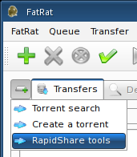
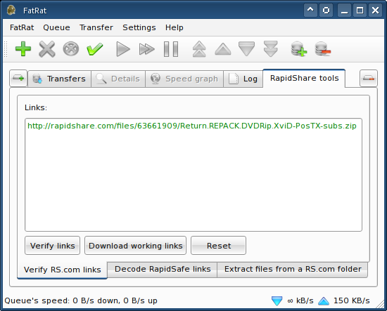

|
RapidShare.com tools |
A RapidShare.com tools window can be created via the "New tab" tool button, as depicted by the following screenshot.

The first utility is the file checker. The file checker verifies validity of any entered links using the RS.com's web service. Working links become green and broken links red.

RapidSave/RapidSafe is an annoying obfuscation service. FatRat can help you with this nuisance by extracting the real RapidShare links. And the last function is the RS.com folder extractor - enter a folder's URL and all links contained will be listed.
Copyright © 2006-2008 Luboš Doležel